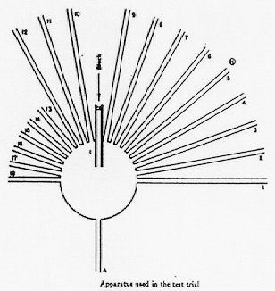

Week 6: Memory
Lecture 6.1: overview of memory

memory: some highlights
Today:
- What memory is for
- Regarding implementation
- Navigation
- Episodic memory
- Conceptual memory
- Relational memory
On Thursday, 2/29:
On Tuesday, 4/9:
- The neural basis for memory for places and events in the
brain
what memory is for
The classical view: memory is for storing bits and pieces of
information.
What memory really is for: assisting behavior by using STRUCTURED
knowledge of the PAST to anticipate the FUTURE.
taxonomy of memory
A textbook taxonomy of memory (from Miyashita, 2004).
Long-term memory is divided into explicit (declarative) memory
and implicit (nondeclarative) memory.
Implicit memory affects behavior without awareness. Explicit
memory is further divided into semantic memory, representing
general knowledge about the world, and episodic memory,
representing personal knowledge of one’s past.
NOTE: these "logical" distinctions are not to be taken too
seriously. As with the rest of cognition, the truth of the
matter can only be found by pursuing an integrative study of
evolutionary, behavioral, computational, algorithmic, and
neurobiological aspects of memory.
a remark on MEANING: "simple memory" and the principle of intrinsically meaningful representation
A camera creates and stores records of the sensor array of pixels.
What do the numbers in a camera memory mean
Real meaning must come from within.
implementation: the multiple realizability of memory
These are two different implementations of the same computational
functionality: a 1-bit memory cell.
multiple realizability of memory
Top row: the von Mises strut and its "potential energy" states in compressed and uncompressed
configurations.
Bottom row: an electronic
S-R latch, its truth table,
and its possible "neural" realization.
The computational functionality of all these devices is the same:
a 1-bit
memory cell.
a little exercise with pretend neurons: a 1-bit (single-pixel) memory cell"
A signal arriving on the Start line stores one bit of information in the
storage neuron (lower left) by turning it ON.
The neuron subsequently remains ON due to the Feedback
connection, until a Stop signal is received.
The state of the memory cell (ON or OFF) is queried by
sending a signal down the Input line to the "readout" neuron:
— if the Output is ON, the state is ON;
— if the Output is OFF, the state is OFF.
The number inside the "neuron" signifies the
threshold. The small circle on an input line denotes inhibition (the
unmarked input are excitatory).
dynamical systems with attractor states

A conceptual tool for thinking about memory maintenance: dynamical systems
with attractor states —
The figure on the right illustrates the
potential energy surface over a
two-dimensional state space.
How many bits of information can be stored in a device with this
energy surface?
[For an analysis of a magneto-mechanical system with this
particular energy landscape, see Li, G. X.,
Ph.D. Dissertation, Cornell University, August 1987.]
controlling memory dynamics
A two-dimensional dynamical system with a controlled
energy landscape —
controlling memory dynamics
The Vise Grip is a dynamical system whose controlling
parameter can be adjusted to result in:
-
two stable states (a 1-bit memory),
or
-
one stable state (useless as a memory device).
MEMORY IN SPACE AND TIME: from objects to navigation
Consider the cognitive demands generated by the lifestyle of a goat:
from objects to navigation
Consider the cognitive demands generated by the life style
of a goat (we already engaged in a similar exercise in
Lecture 2.2):
goats do roam!
This is why goats need:
- memory-based navigation
- episodic / prospective memory
This image is what Google search came up with when asked for
pictures of roaming goats...
[AN ASIDE] goats and climate change
"Goats specifically account for 4% of overall greenhouse gas
emissions in global animal farming."
but...
Goats are a species that is projected to adapt better to the
negative consequences of climate change. They withstand the
potential repercussions of climate change better than other farm
animals due to their specific features. Another advantage is that
landless small-scale farmers in rural regions prefer goats as a
guaranteed higher production system with little infrastructure and
effort. While the future is fraught with unexpected climatic
pressures, managing resilience and adaptation strategies based on
goat breeding can reduce the vulnerability of rural households to
their livelihoods. Even in the worst-case scenario, goat farming
will be ecologically friendly and cost-effective in meeting the
expanding population's animal protein demands. In conclusion,
goats are an appropriate climate-resilient model for future animal
production activities because of their improved drought and
thermo-tolerance, unique eating behavior, capacity to thrive on
limited pasture, improved feed conversion efficiency, high
resistance to disease and internal and external parasites,
potential to emit less methane and minimal investment in goat
farming.
Source: Koluman,
N. (2023). Goats and their role in climate
change. Small Ruminant Research 228:107094.
[AN ASIDE (cont.)] the military and climate change
"US military aims for net zero by 2050 but with a carbon
footprint
greater than some 140 countries critics say it
needs radical change." [source: the Guardian
(Thu 10 Mar 2022)]
"Militaries are responsible for 5.5% of global greenhouse gas
emissions. If the global military were a country, this would
place it fourth in terms of its emissions, between India and
Russia." [source: the Guardian
(Tue 9 Jan 2024)]
Why single out the U.S.?
"The United States spends more on national defense than China,
Russia, India, Saudi Arabia, United Kingdom, Germany, France,
South Korea, Japan, and Ukraine — combined."
[source]
back to navigation: Charles H. Turner on a hunting snake taking a detour (Science, 1909)
"SEVERAL years ago, while Mr. Lester and I
[Charles Henry Turner] were sauntering
along a country road near Newnan, Ga., a commotion was heard
in the dry leaves along the side of the road. On quietly
entering the underbush, it was noticed that the noise was
caused by a struggle between a coach-whip snake and a lizard
that was unknown to me."
[The lizard climbs a tree; the snake tries to follow.]
"Then, all of a sudden, the snake dropped to the ground. The
lizard continued to gaze downward. About a foot from the tree
upon which the lizard was resting, head downward, there stood
another tree. Spirally up this trunk the snake quietly and
slowly climbed, until it was a few inches above the level of
the lizard. The unsuspecting lizard was scrutinizingly gazing
downward. Quietly and quickly the snake extended the front
portion of its body, and, with a sudden dart of the head,
knocked the lizard to the ground. Before the latter had time
to recover from the effect of the unexpected blow, the snake
had dropped to the ground and recaptured it."
the amazing eight-legged lion
A jumping spider of the
Portia genus plans and executes a detour to sneak
up on the much larger
St Andrews Cross spider in its web.
Tolman's rats and the opposite of a detour
 |
 |
 |
Behavioral evidence for cognitive maps, from Cognitive maps in rats and men,
Edward C. Tolman, Psychological Review 55:189-208 (1948).
a common navigational aid: landmarks
|
|
| Does the photo on the left show a sunset or a sunrise? |
using relational vs. positional cues
Directional cues: sun, sky, river, and slope.
Positional cues: trees, a rock, a cabin, and a shrub.
Target: a blue crystal hidden in the grass.
The probe environments were modified from the training
environment by removing either positional or directional cues.
Effects of cue types on sex differences in human spatial memory,
X. J. Chai, L. F. Jacobs, Behavioural Brain Research 208:336-342 (2010).
relational vs. positional cues: sex differences
"When the slant directional cue was removed in a hidden-target
location task, male performance was impaired but female
performance was unaffected. The removal of positional cues, on the
other hand, impaired female performance but not male performance."
navigation and foraging (a field experiment in Tlaxcala, Mexico)
Sex differences in mushroom gathering: men expend more energy to obtain
equivalent benefits.
L. Pacheco-Cobos, M. Rosetti, C. Cuatianquiz,
R. Hudson, Evolution and Human Behavior 31:289–297 (2010).
next (briefly): the structure of conceptual memory

A tiny portion of the enormous network of concepts a variant of
which resides in every person’s memory. Some of the bottom-level
nodes label features, others parts. The links are maintained
DYNAMICALLY (they depend on past experience and on the current
goal context) and are graded rather than all-or-none. Altogether,
the network is structured as a TANGLED HIERARCHY because concepts
may belong to more than one higher-level category.
(See section 6.5, Concepts, in the textbook for details and
discussion.)
concepts and creativity
Concepts are DYNAMIC and are constituted
ad hoc.
ANY instance of concept use is an instance of CREATIVITY.
Whittington et al. (2020): the Tolman-Eichenbaum relational memory machine
The Tolman-Eichenbaum Machine, named in honor
of Edward Chace Tolman
and Howard Eichenbaum for their contributions to
cognitive theory, provides a unifying framework for the role of
MEMORY in spatial and nonspatial
generalization and unifying principles
underlying many entorhinal and hippocampal cell types.
Whittington et al., 2020, Cell 183:1-15.
DOI: 10.1016/j.cell.2020.10.024
Whittington et al. (2020): the Tolman-Eichenbaum RELATIONAL MEMORY machine
STRUCTURED relationships exist in many situations and can often
be formalized on a connected graph, e.g.,
- social hierarchies,
- transitive inference, and
- spatial reasoning.
Often the same relationships GENERALIZE across
different sets of sensory objects (e.g., left/right in A). This
transferable structure allows quick INFERENCE, e.g., seeing only
the blue relationships allows you to infer the green ones.
relational memory (Whittington et al., 2020)
(D) [The model's] task is predicting the next sensory
observation in sequences derived from probabilistic transitions
on a graph. Each node has an arbitrary sensory experience, e.g.,
a banana. An agent transitions on the graph observing only the
immediate sensory stimuli and associated action taken, e.g.,
having seen motorbike/book/table/chair, it should predict the
motorbike next if it understands the rules of the graph.
(E) If you know the underlying structure of social hierarchies,
observing a new node (in red) via a single relationship, e.g.,
Emily is Bob’s daughter, allows immediate inference about the
new node’s (Emily’s) relationship to all other nodes (shown in
black/gray).
(F) Similarly for spatial graphs observing a new node on the
left (solid red line) also tells us whether it is above or below
(dashed red lines) other surrounding nodes.
relational memory (Whittington et al., 2020)

(G) Our agent [model] performs this next step prediction task in many
worlds sharing the same underlying structure (e.g., 6- or
4-connected graphs), but differing in size and arrangement of
sensory stimuli. The aim is to learn the common structure in
order to generalize and perform quick inferences.
(H) Knowing the structure allows full graph understanding after
only visiting all nodes, not all edges. Here, only 18 steps (red
line) are required to infer all 42 links.
(I) An agent that knows structure (node agent) will reach peak
predictive performance after it has visited all nodes, quicker
than one that has to see all transitions (edge agent).
memory as a space-TIME machine
"The bi-cone shows a mental time traveler in the present moment
who can both remember past episodic memories and plan future
events. The circular balloons show memories or planned events at
varying temporal distances into the past or future. The size of
these balloons represents the number and clarity of these
memories or plans. Although individuals show bulges in the cone
for particularly memorable periods in their past, the bi-cone
represents the pattern of human mental time travel."
[William A. Roberts and Miranda C. Feeney (2009). The
comparative study of mental time travel. Trends in Cognitive
Sciences 13(6):271-277.]
Mental time travel has been demonstrated in other species,
including scrub jays, rats, and non-human primates.
memory and the self
A man sets himself the task of portraying the world.
Over the years he fills a given surface with images of provinces and
kingdoms, mountains, bays, ships, islands, fish, rooms, instruments,
heavenly bodies, horses and people.
Shortly before he dies he discovers that this patient labyrinth of lines
is a drawing of his own face.
Jorge Luis Borges
The afterword to
The Maker (El hacedor), 1960